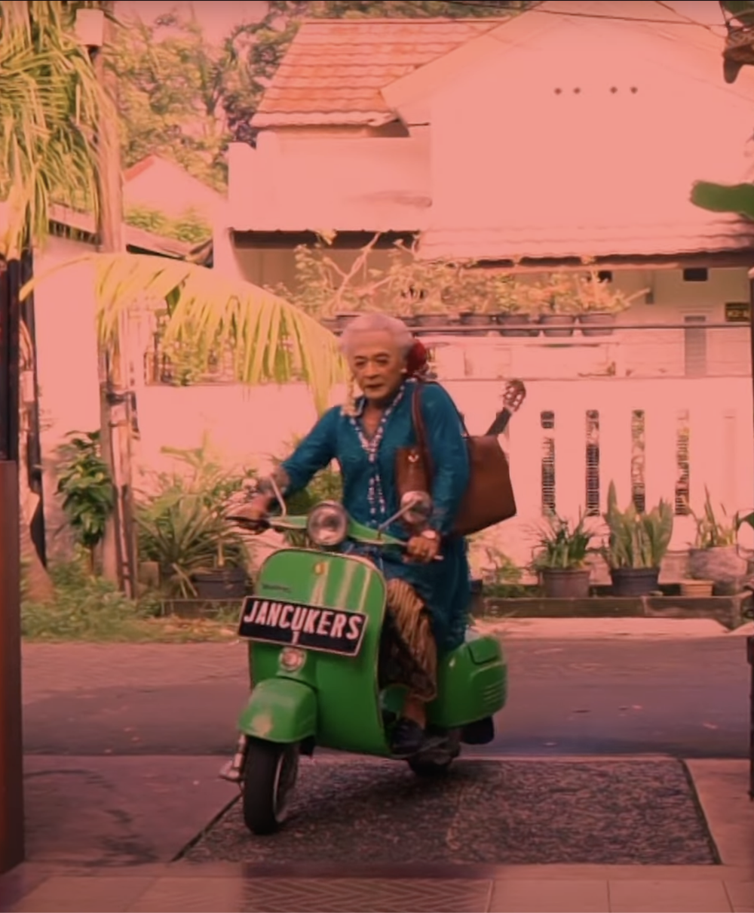

Dalang? Penyair? Komposer? Pelukis? Dukun? Penulis? Influencer? Bajingan?

Sujiwo Tejo is one of Indonesia's most unconventional and provocative cultural figures. Known as a dalang kontemporer — a contemporary shadow puppet master — he defies easy categorization.
His work spans traditional Javanese wayang, poetry, music composition, fine art, and social commentary. With a massive following under the title President Jancukers, he challenges the boundaries between the sacred and the profane, the classical and the radical.
Born into the gamelan, Sujiwo Tejo carries its spirit through every medium he touches — not as a relic to be preserved, but as a living force to be reinterpreted.